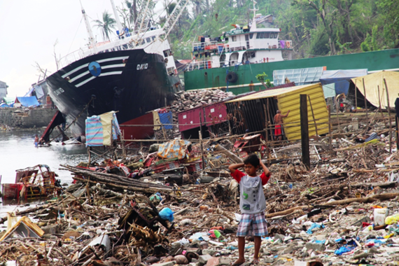
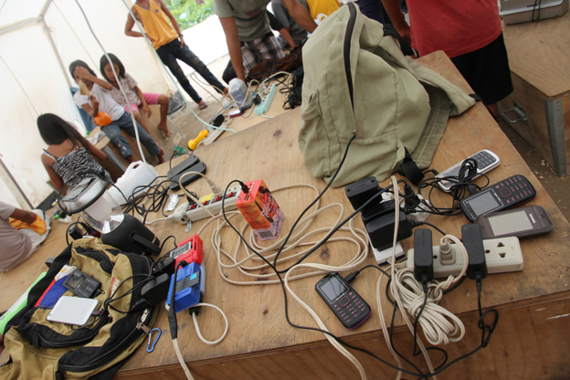
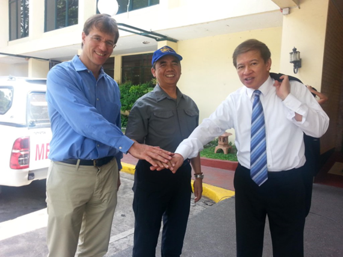
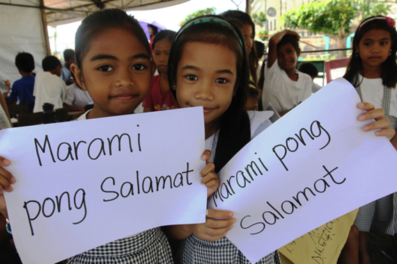

OCHA日本人職員フィールドレポート（小出圓）
国連人道問題調整事務所（OCHA）フィリピン事務所
人道問題アソシエート担当官 小出 圓（こいで まどか）さん
--フィリピン台風支援における民間セクターの活躍から学ぶ--
届ける支援から、繋がる支援へ
東京都出身。高校留学を機に渡米しアメリカのオーバリン大学で異文化コミュニケーションと生物学を専攻。卒業後、国連ニューヨーク本部でツアーガイドとして勤務する傍らジョージタウン大学大学院で言語・コミュニケーション研究修士号取得。国連事務総長報道官室勤務を経て、2014年6月より日本政府・外務省が派遣するジュニア・プロフェッショナル・オフィサー（JPO）として現職。
台風ハイヤンとOCHAの役割
2013年11月8日は、フィリピンの多くの人たちにとって日本の3.11にも似た追悼と教訓の意味を持っています。この日フィリピン中部サマール島に上陸した台風30号（国際名：ハイヤン）は、死者・行方不明者7,300人以上、損壊家屋約114万戸（うち半数近くが全壊）、500万人以上が避難生活を余儀なくされるという未曾有の大災害を引き起こしました。
直後の国家非常事態宣言を受け、各国政府や国連、赤十字、NGOなどが救助隊や医療チーム、救援物資を送るとともに義援金を募り、被災した地域の救援・復興活動を助けるための大規模な国際人道支援が始まりました。続々と到着する緊急援助のエキスパート達に混ざって、民間企業も支援に加わりました。
高潮で壊滅的な被害を受けたレイテ島のタクロバン市では、コカコーラが工場内の水と缶・ボトル飲料を被災者に提供。破損した工場を閉鎖せずに再稼動する決断をし、地元の経済復興にも大きく貢献しました。また国内の通信サービス会社が被災直後から寸断されたネットワークの復旧に努め、無料通話や携帯端末の充電サービスを提供したことが、安否確認や救援情報共有に役立ちました。
私が勤める国連人道問題調整事務所（OCHA）も、フィリピン政府や国内外の支援組織と提携しながら、被害状況や被災者のニーズの把握と情報管理、それに基づく包括的かつ戦略的な国際人道対応計画の作成、さらに被災者と支援者との対話の促進などに尽力しました。OCHAの仕事は水や食料の支給や医療処置といった目に見えやすい支援ではありません。
しかし災害・紛争時、いち早く現場に入り、人道危機の実態とそれに対する様々な支援、貢献可能なステークホルダーの所在分布などを俯瞰的に把握し、資源・情報・人員の適時配分戦略を立てるOCHAの存在はとても重要です。
こうした活動を通じて、被災者と救援者双方をサポートしながら、混乱を解消し、最も必要な支援が、それを最も必要としている人たちに、より早く、効率良く届けられるよう緊急支援活動全体をコーディネート（調整）する、いわば「縁の下の力もち」の役割を担っているのがOCHAなのです。
民間セクターとのパートナーシップ
台風30号の緊急対応時、OCHAは初めて民間セクター協力の専門スタッフを現地に派遣しました。というのも、被災地域の危機的な状況が国際的に報道されたこともあり、直後から世界中の企業や財団などから救援の打診が集まってきたからです。
大規模災害に際して民間セクターの緊急支援が大きな役割を果たすことはこれ以前にも知られていましたが、台風30号の対応時にはそれを戦略的にコーディネートし、 国内外の既存の人道システムと連携させることで、救援活動全体の効率化をはかる取り組みがなされました。
これに対しOCHAは企業向けの状況報告と支援の要請・手順をまとめたビジネス・ブリーフ（英語）を配布。
同時に、フィリピン国内の企業ネットワークや商工会とも連携して、これまで主に国際機関、赤十字そしてNGOが中心となって提唱・実践してきた国際人道支援の仕組みと基本原則を民間セクターにも理解、支持してもらえるよう働きかけました。
また、以前から全体像が捉えにくかった民間セクターの人道支援への取り組み、特にフィリピン国内の企業や財団の救援・復興活動について把握し、人道クラスターシステムを通じて国レベルの支援活動に戦略的に加わってもらえるようコーディネートする試みも始まりました。
実際、国内企業や財団の多くが、フィリピン政府の復興対策案をサポートする形で、被災者の仮設住宅の設営、学校や病院などの再建、食料や水の支給、打撃を受けた零細企業の再興支援などを展開していきました。
フィリピンの国際人道支援を統括する人道チームが取りまとめた「台風ハイヤン戦略的対応計画（英語）」の最大のスポンサーは、実にその25％以上--金額にして1億2000万ドル以上（日本円で130億円余り）--を寄付した民間セクター（個人を含む）でした。
しかも、この中には先に紹介したような地元企業の初期対応や復興支援は含まれていません。さらに国外の企業がその専門技術やサービスを提供して行った支援--航空会社による救援物資の輸送や、コンサルティング会社が被災した自治体や支援組織に対して行った復興コンサルティングサービスなど--も含めると、「ヒト、モノ、カネ」を動員した民間セクターの人道的貢献は計り知れません。
私がOCHAフィリピン事務所に赴任したのは台風から半年あまりが経った2014年6月でしたが、着任直後の仕事の一つとして、人道支援のための民間セクターとのパートナーシップ促進を任されました。新興国でありながら世界有数の災害多発国でもあるフィリピンには、 防災、災害対応、復興支援の経験やリソースが官民を問わず蓄積されています。
被災国、被災地域主導の救援・復興活動でそれらが最大限活用されるようサポートしながら、OCHAの付加価値--大規模な国際緊急対応をコーディネートするノウハウや、中立性や独立性といった国際人道原則の啓蒙、人道危機下で特に弱い立場にある女性や子供のニーズの主張など--をどう付与できるかを戦略化し、民間セクターとのパートナーシップに実践・適用する、とてもやりがいのある仕事でした。
民間セクター：ドナーからアクターへ
台風30号の被災地域での国内外の民間セクターの活躍は、産業界が資金面の援助だけでなく、人道支援の第一人者としてどんな貢献をしているのか、しうるのかを国際社会に報告・提言する機会となりました。
そしてこのような試みは、昨年3月に携帯通信事業の国際ネットワークGSMAが採択しこれまでに大手携帯電話会社6社が加盟した人道接続性憲章（英語）や、ユニクロが国連難民高等弁務官事務所（UNHCR）とのパートナーシップを通じて行っている世界中の難民への衣料支援などに見られるように、業種や国境を超えて広がっています。
そして民間セクターには、慈善事業や企業の社会責任といった枠組みを超えた「人道への投資」 を唱える人たちもいます。災害が起きてから対処するのではなく事前の危機管理に努めることや、人道危機の影響を受けやすい地域の社会・経済基盤を固めてコミュニティの強靭性を高めることは、いざという時の事業継続性の確保や経済の早期回復につながる。そしてそのために各業界の先端技術や革新的なアイデアを活用することはビジネスとしても合理的である、という考え方からです。
こうした民間セクターネットワークの一つがフィリピン災害復興財団（PDRF）です。PDRFは2009年に設立された、フィリピンでは比較的新しい企業財団ですが、政府をはじめ国連や災害マネジメントの研究機関、地元メディアやNGOなどと積極的にパートナーシップを構築してきました。
台風30号被災地域での救援・復興活動が一段落した2015年からは、フィリピンの産業界がより戦略的に防災及び災害対応に取り組めるよう、国際機関や市民団体の有識者を招いた会議やワークショップを定期的に開催し、マニラ首都圏直下型地震や大型台風を想定した民営の災害オペレーションセンターの設置を目指すなど、活動の幅を広げています。
昨年３月に仙台で開かれた国連防災世界会議にも参加し、フィリピンの民間セクターが政府や国際機関と協力しながら行っている人道活動について発表、他国からの参加者との意見交換も行いました。
広がるパートナーシップと世界人道サミット
フィリピンでは民間セクターの他にも、大規模災害時の捜索・救援活動に携わる軍関係者、 生活援助や緊急雇用支援を支える銀行や金融会社、さらに被災者との対話を救援・復興活動に反映していく「コミュニティ・エンゲージメント」を推進するメディアや地元の市民団体などが、人道支援の重要なパートナーとして政府や国際機関と一緒に活動しています。そして今、こうした幅広いパートナーシップが既存の人道システムを見直し刷新する原動力となることが期待されています。
5月23日と24日にトルコのイスタンブールで開かれる世界人道サミットでは、現在私たちが直面している人道危機をめぐる最重要課題の多くが、各国政府、国際機関、市民社会、民間セクターなどの代表によって議論されます。
温暖化と気候変動の影響で激化・頻発する自然災害や、長引く紛争やテロによって拡大・複雑化する人道ニーズと支援格差にどう対応するのか。組織やセクター、人道支援と開発支援の壁を超えて多くのパートナーが協力し、より効率的・効果的に人道支援を実現するためにはどんな合意や枠組みが必要なのか。進化を続けるメディア・データ工学や無人航空機などの革新技術を緊急援助にどう応用できるか、など。
サミット開催に先駆けて今年2月に国連事務総長が発表したレポート及び「人道への課題（Agenda for Humanity）」には、こうした問題に取り組む上で国際社会が共有すべき「5つの核となる責任」が示されています。
難民や移民の自国外の経済社会活動への参加と貢献促進、より洗練された危機管理に基づく保険や投資、官民連携における相補性の強化など、民間セクターが果たせる役割についても提案されています。
台風30号から2年以上が経ち、大きな被害を受けたフィリピン中部でも復興が進んできました。被災地に届けられた支援の多くが、それを支えた様々なパートナーシップと、そこから生まれた新たなパートナーシップによって 「次」に備えた防災とコミュニティ強化に生かされています。
でも世界では今、日本の人口に匹敵する1億2500万人もの人たちが自然災害や紛争の犠牲となり、生きのびるための支援を必要としています。想像してみてください。彼らがやっと辿り着いた避難所に水がなかったら。緊急医療を提供する病院が爆撃されたら。自分の家や国に何年も帰れなかったら。
世界人道サミットの本当の主役は、危機の瀬戸際でいのちを削っている被災者たちなのです。国際社会はその声に耳をかたむけ、例えばフィリピン、そして日本で描かれた支援の未来像を、明日のいのちを繋いでいくための具体的なコミットメントに結びつけられるでしょうか。そこには私たち一人ひとりにできることがあるはずです。
シリーズ「今日、そして明日のいのちを救うために ― 世界人道サミット5月開催」一覧（国連広報センター）＞＞